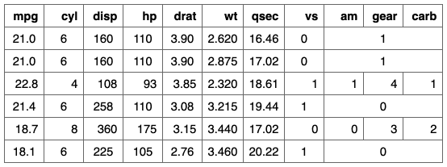

| merge_h_range {flextable} | R Documentation |
Merge flextable columns into a single one for each selected rows. All columns must be consecutive.
merge_h_range(x, i = NULL, j1 = NULL, j2 = NULL, part = "body")
x |
|
i |
selected rows |
j1, j2 |
selected columns that will define the range of columns to merge. |
part |
partname of the table where merge has to be done. |

Other flextable merging function:
merge_at(),
merge_h(),
merge_none(),
merge_v()
ft <- flextable( head( mtcars ), cwidth = .5 ) ft <- theme_box( ft ) ft <- merge_h_range( ft, i = ~ cyl == 6, j1 = "am", j2 = "carb") ft <- flextable::align( ft, i = ~ cyl == 6, align = "center") ft